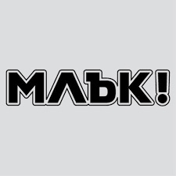
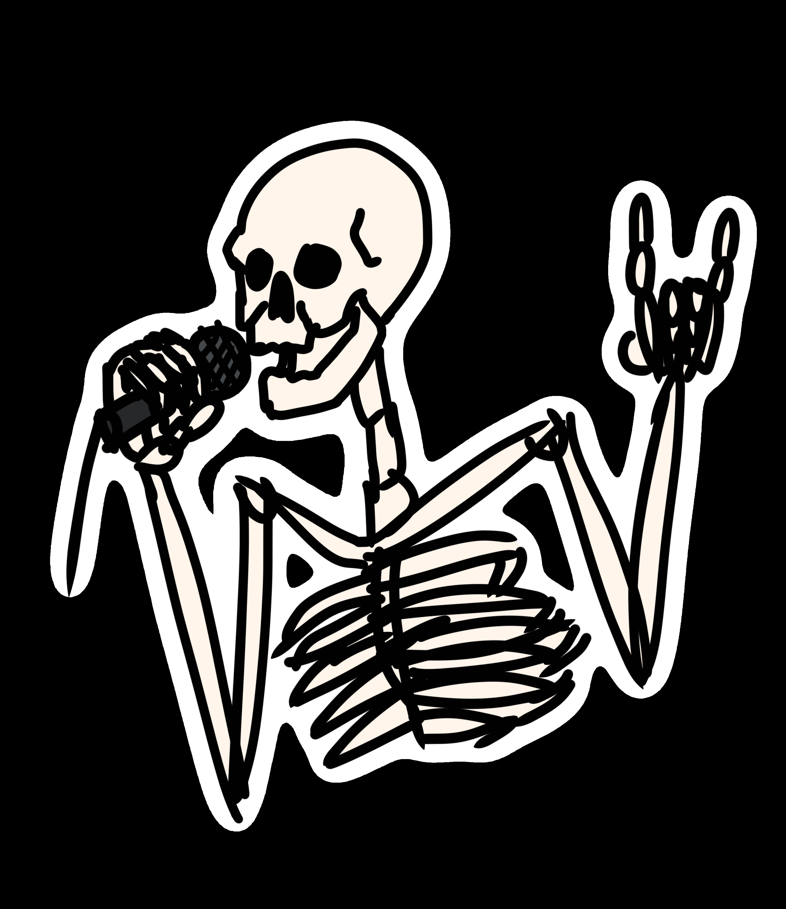
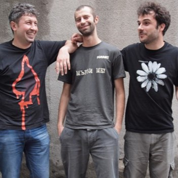
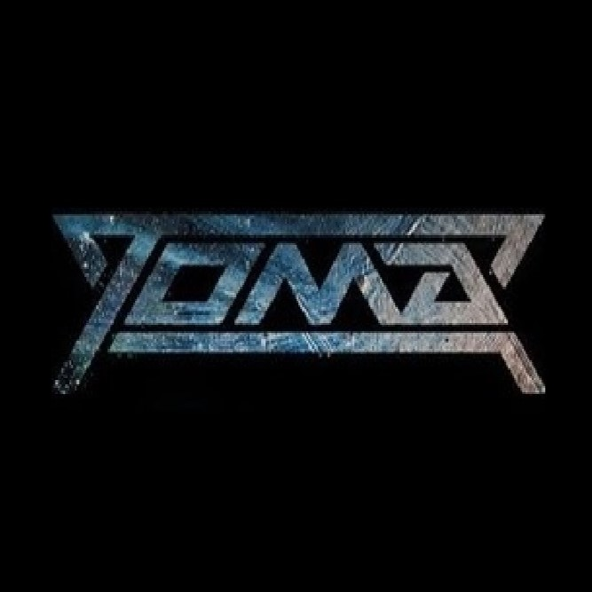
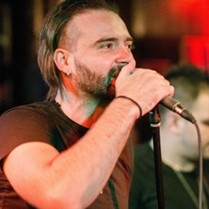
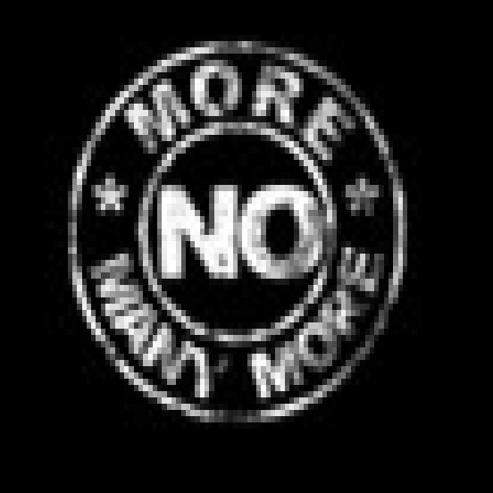
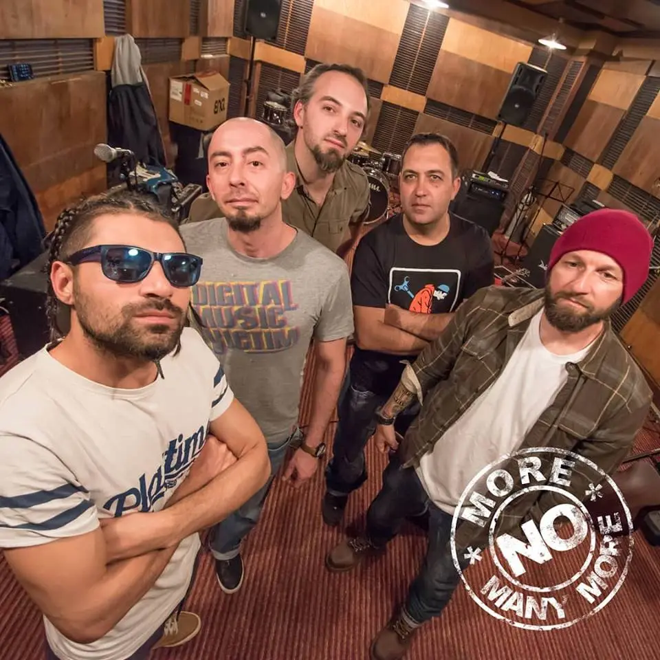
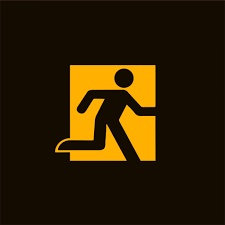
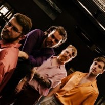
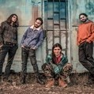

 Млък! са създадени от Красимир Кунчев - Крас (вокал, композитор, текстописец), Георги Малчев (китара) и Евгени Христов (бас) в София. Скоро след това се присъединява и Павел Стойчев на барабани. Първият им концерт е в легендарния клуб за авторска и ъндърграунд музика О‘Шипка на 19 април 2004 г., което групата смята за свой рожден ден. Само след няколко месеца за барабанист е привлечен Теодор Обретенов и така се оформя съставът за следващите няколко години. Групата експериментира с разнообразни стилове - пънк, алтърнатив, прогресив и метъл, а оригиналните и често вдъхновяващи текстове. Млък! са известни със своето впечатляващо и енергично сценично шоу. Освен стотиците клубни концерти през годините, музикантите имат зад гърба си запомнящи се изяви на големи международни фестивали – четири пъти на Spirit of Burgas, Bestival 2007 в Букурещ, главната сцена на Rokaj Fest в Загреб през 2009, Wrong Fest през 2014 в София и Hills of Rock 2018 в Пловдив.
КОНЦЕРТИ
На тази страница ще можете да прочете повече за събития, на които родните ни банди вдигат шум и се заявяват пред света .
Ще имате възможността да се информирате за наскоро състояли се концерти и фестивали, на които групите са гостували или дори са превзели главната сцена, създавайки изключително зареждаща атмосфера.
Петте групи, които сме включили в секцията за концерти тази седмица, са: MLYK (пънк), Toma (рок), No More Many More (алтърнатив), Hayes&Y (алтърнатив) и Cool Den (рок).
Приятно четене!
MLYK
 Група „Семе” направиха кавър на някои от хитовете на „Млък!” на концерта си на 23-ти септември 2024 година. Оригиналната група ги поздрави за превъзходното изпълнение на своята Facebook страница.
TOMA
 Тома е българска рок група, създадена от Тома Здравков, която свири алтернативен рок.Първата по-сериозна изява на групата е през 2009 на стадион Академик, когато те подгряват ZZ Top. През 2010 и 2011 участват в „Coca-cola happy energy tour“. През 2011 излиза песента „Сам на света“ с участието на рапъра Били Хлапето, номинирана от БГ радио за най-добра песен, най-добър текст и най-добър бг клип. Песента е изпява на живо в много телевизионни предавания като Шоуто на Слави, „В джаза“ и „Денис и приятели“. През 2013 издават два сингъла – „I'm Lost“ и „Покорявай“. Групата участва в благотворителен концерт в подкрепа на филма на Максим Генчев „Дякон Левски“, а през юни 2013 и на „Цвете за Гошо“. В началото на 2014 г издават новия си сингъл „Парашут“. С тази песен участват и в конкурса за подгряваща група на Ку-Ку бенд.
 Специални гости са британските поп звезди от 90-те години East 17, koumo са за първи път във Варна, са и популярната българска банда „Тома”, измежду други участници.
NO MORE MANY MORE
 NO MORE MANY MORE e група, сформирана от няколко музиканти от различни банди в началото на 2013 г. Стилът им е смесица от алтернативен рок, поп и дори елементи на хип-хоп. Групата се отличава със социално ориентирани текстове на български език. Първият сингъл "Тук някъде" е записан само от Камен и излиза през януари. През 2014 г. групата печели първо място на фестивала "Силата на рока", a през зимата на същата година са поканени да участват в два от концертите на световно известният музикант и основател на House of Pain - Everlast. В началото на 2017 г. излиза дебютният албум на NO MORE MANY MORE, озаглавен "По един или друг начин" и участват на "Локум Фест" в Бургас. Членове на групата участват в акустични концерти под названието "Front Man's Night". През септември 2019 г. NO MORE MANY MORE участват на проведения в Маймунарника "Adrenaline Music Fest". През 2020 г.излиза вторият албум на бандата - "Не и този път". Албумът "Помогни ми" излиза през 2022 г.
 Лятото на 2024 година беше динамично за No More Many More, които се качиха на сцената на най-големия рок фестивал в България – Hills of Rock 2024 за едно от най-силните изпълнения на сцената на Строежа в Пловдив. Публиката, заредена с енергия, не спираше да показва своята подкрепа и обич към любимата група.
HAYES&Y
 Hayes&Y пеят на английски, а музиката им е рязко различаваща се от тази, с която сме заобиколени ежедневно. Свежа, мелодична, романтично-лирична, определяна като алтернативна, тя е точно алтернатива на всичко останало. Музикантите започват да свирят още в десети клас на Английската гимназия, където са съученици. Захващат се с музика по-сериозно през 2014 – 2015 г. Състав: Ивайло Делев – бас китара, Благослав Анастасов – вокалист и ритъм китара, Радослав Лозански – соло китара и синтезатори, Денис Холбек от Финландия е барабанист и беквокалист. Единствено той е с музикално образование. Ивайло Делев е юрисконсулт в държавната администрация, а басистът и китаристът завършват УНСС. Благослав Анастасов и до днес се занимава само с писане на музика, наскоро пише цял албум за Стенли, за Миро и Рут Колева също прави песни. Той е движещата сила на групата „Хейз енд Уай“.Измисляйки това име, разбрали след време, че има едно градче близо до Лондон, което се казва Хейз, и там „Бийтълс” са записвали албум. През 2020 г. са подгряваща група на Arctic Monkeys в Румъния, ден след концерта им в Бургас.Успяват в BBC да пробият с песен. Още като издават Always So Simple, Always So Cold, я изпращат в радиото, където на платформа за независима музика може да си качиш парчетата и ако някой ги хареса – да ги пуска. Тази им песен я въртят почти три месеца в предаването „Би БиСи представя Манчестър“. Почти всички от следващите им песни намират място в BBC. Дори в началото не са сигурни дали да казват, че са българи, но това се оказва още по-интересно за англичаните. Българи, отишли специално в Англия, за да правят музика. В Англия откриват и новия си барабанист Денис Холбек. Организират концертите си сами. Почти винаги залите са пълни.
 Hayes&Y посрещнаха 2025 година в SOFIA LIVE CLUB с 2 лайв сета, 3 гост DJ-и, изненади, награди и градски транспорт. Hayes & Y's New Year Celebration започна с DJ Set на Ник Събев, познат от Depeche Mode партита, които прави, а в тяхната вечер пуска микс от New Wave, Indie и Disco!
COOL DEN
Cool Den:Групата е създадена от Никола Симеонов и Ивайло Петров. Към тях се присъединява и Явор Цветанов. Никола и Явор се познават от преди и са свирили заедно по парковете в Шумен.В началото започват с акустични концерти, докато в групата идва басистът Васил Андреев. През есента на 2019 г. групата е представена с интервю по БГ Радио. COOL DEN започват записи за дебютния си албум. През март 2020 г. пускат пилотния сингъл "Лек". Албумът, озаглавен "1" излиза същата година. През лятото групата представя албума на поредица от концерти в страната. Заснемат и видеоклипове към две от песните в албума - "Алгебра" и "Характер". В началото на следващата година COOL DEN започват работа по втория си албум. През лятото на 2021 г. имат редица фестивални участия - "Узана Поляна Фест" - Габрово, "Buzludzha Open Fest", "Sunland Festival" - Приморско, "Rock Fest Hotalich" - Севлиево и др. През септември пускат видео-сингъла "Тази земя", а месец по-късно излиза и вторият албум на бандата, носещ същото заглавие. След излизането на албума, бандата стартира активна концертна дейност по клубове в страната и фестивални участия. В началото на 2023 г. е първият им концерт зад граница - в Лондон, заедно с още две български банди.
 Коледа с No Many Cool More Den More Den Many Cool No More Many More & Cool Den - Club Stroeja - 25.12.2024 беше едно от най-успешните празнични събития за годината. Атмосферата беше невероятна и със сигурност си заслужаваше да се преживее.